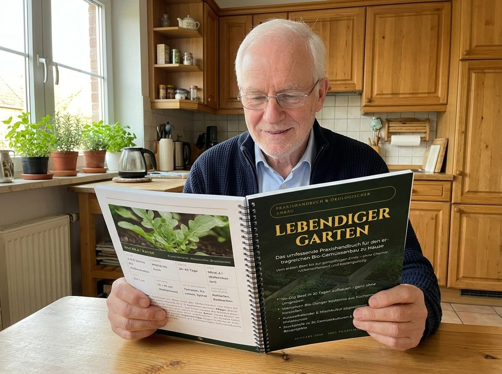
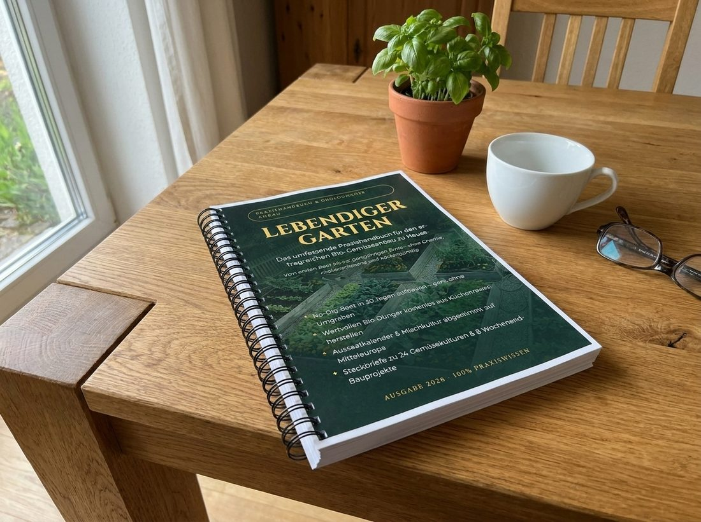
Digitale Ausgabe, einfach zu Hause drucken & spiralbinden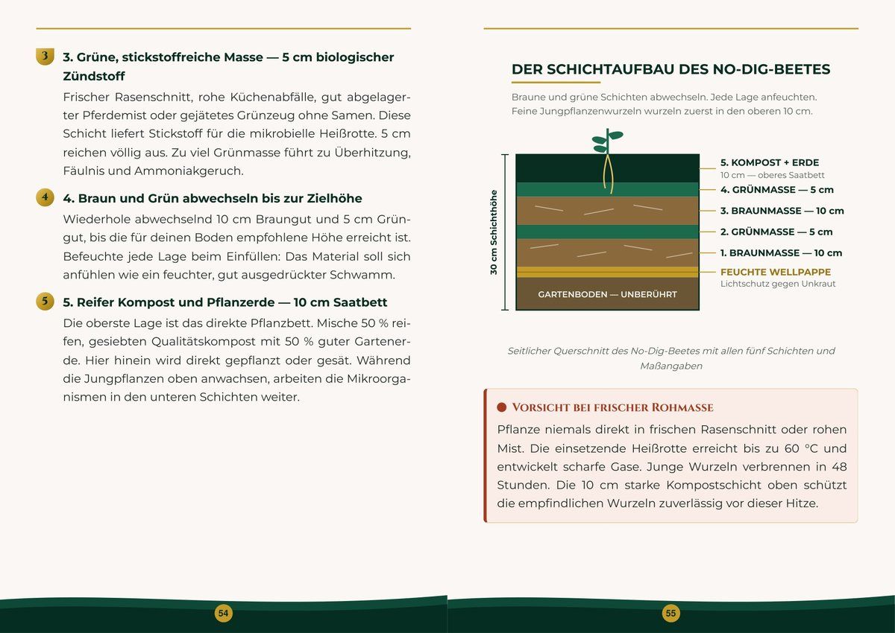
347 Farbseiten, Schritt-für-Schritt-Diagramme & exakte Maße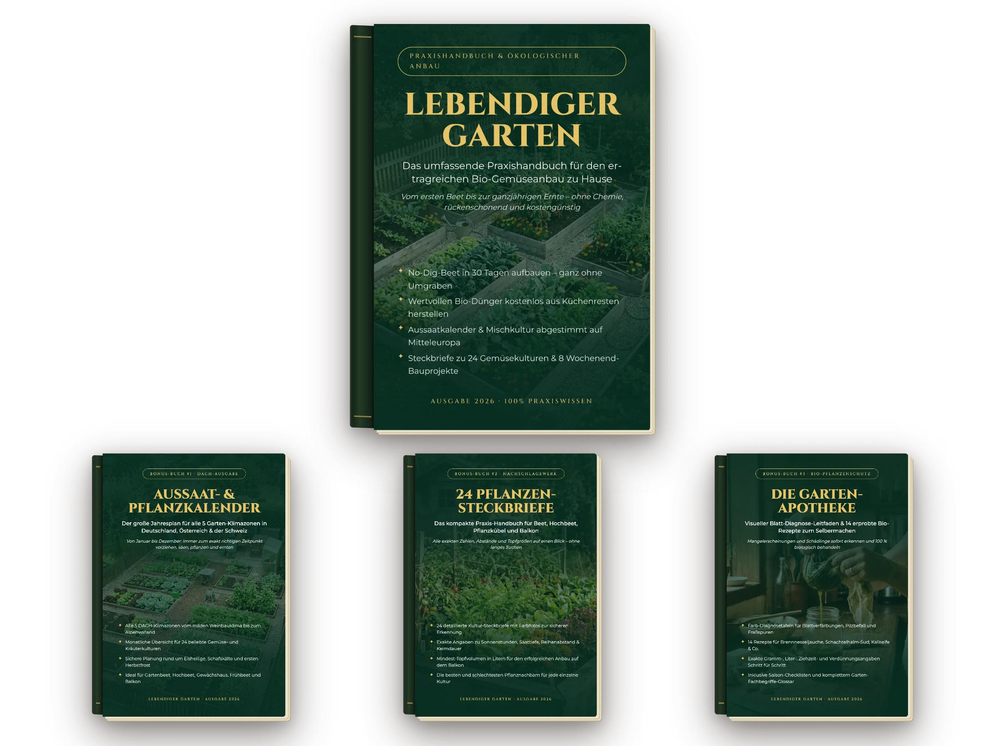
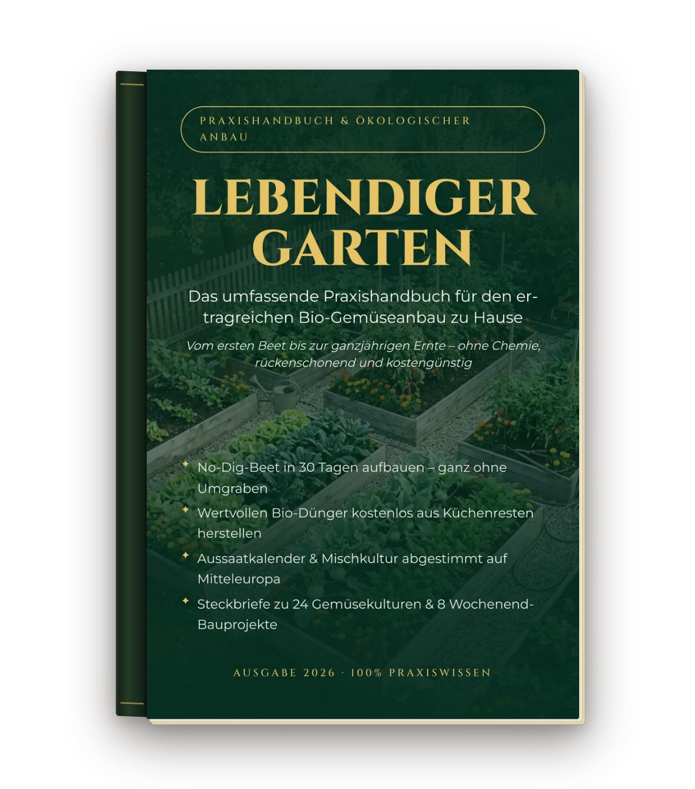
Niemand verliert seinen Gemüsegarten aus Mangel an Liebe – man verliert ihn aus Mangel an einer Methode mit exakten Zahlen. Auf 347 durchgehend farbigen Seiten lernst du vom No-Dig-Beet ohne Umgraben über eigenen Bio-Dünger aus Küchenabfällen bis hin zu 24 Pflanzen-Steckbriefen und 8 Wochenend-Bauprojekten alles, was deinen Garten, dein Hochbeet oder deinen Balkon aufblühen lässt.
Lebendiger Garten ist ein durchdachtes, durchgehend farbiges Praxishandbuch mit 40 klaren technischen Diagrammen und 104 Fotografien, damit du jeden Handgriff auf einen Blick verstehst – ganz ohne trockenes Fachchinesisch oder endloses Blättern.
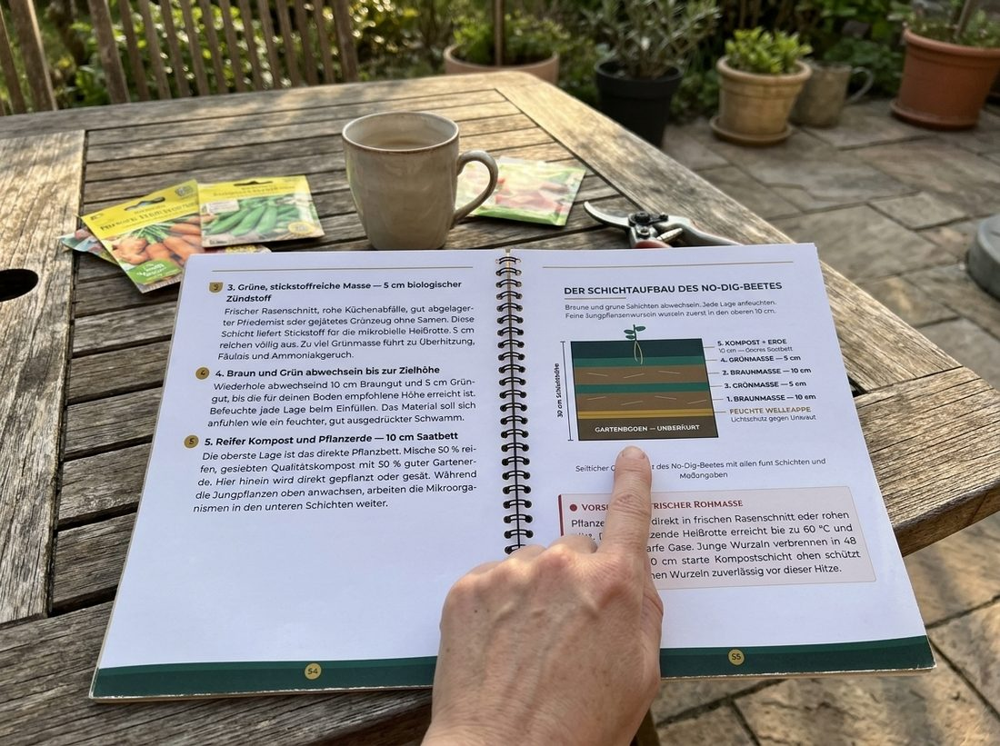
Du musst das Buch nicht von Seite 1 bis 347 am Stück durchlesen. Schlage beim Morgenkaffee ein einziges Kapitel oder ein Wochenend-Projekt auf und setze es direkt im Garten oder auf dem Balkon um. Überall findest du exakte Zentimeter-, Liter- und Zeitangaben statt vager Floskeln!
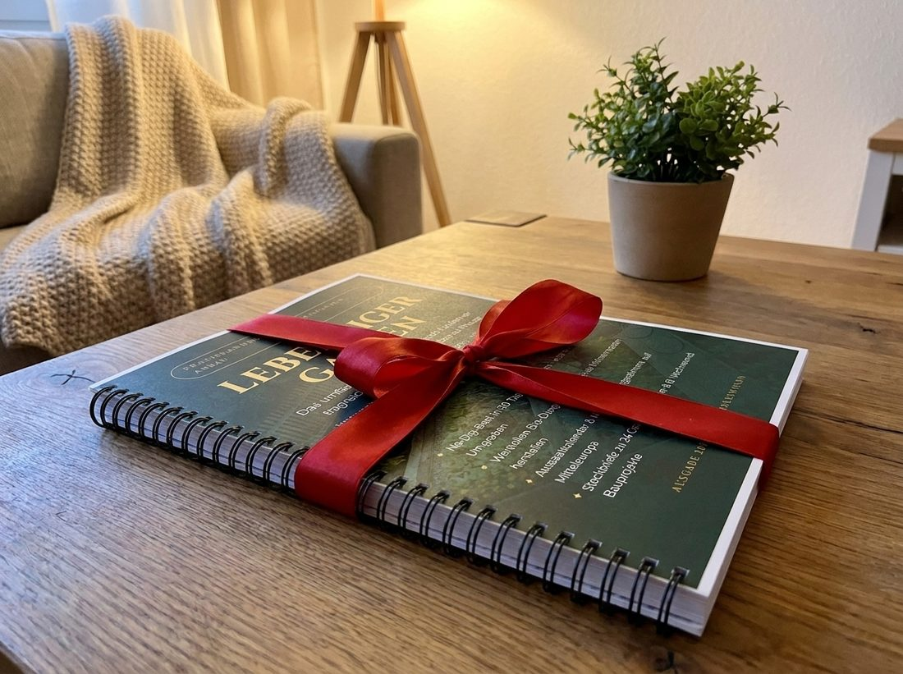
Es ist auch ein wunderbares Geschenk für Eltern, Großeltern, Kinder und Gartenfreunde. Drucke es zu Hause oder im Copyshop aus, lass es mit einer Spiralbindung versehen und verschenke ein Handbuch, das über Jahre hinweg für volle Erntekörbe sorgt.
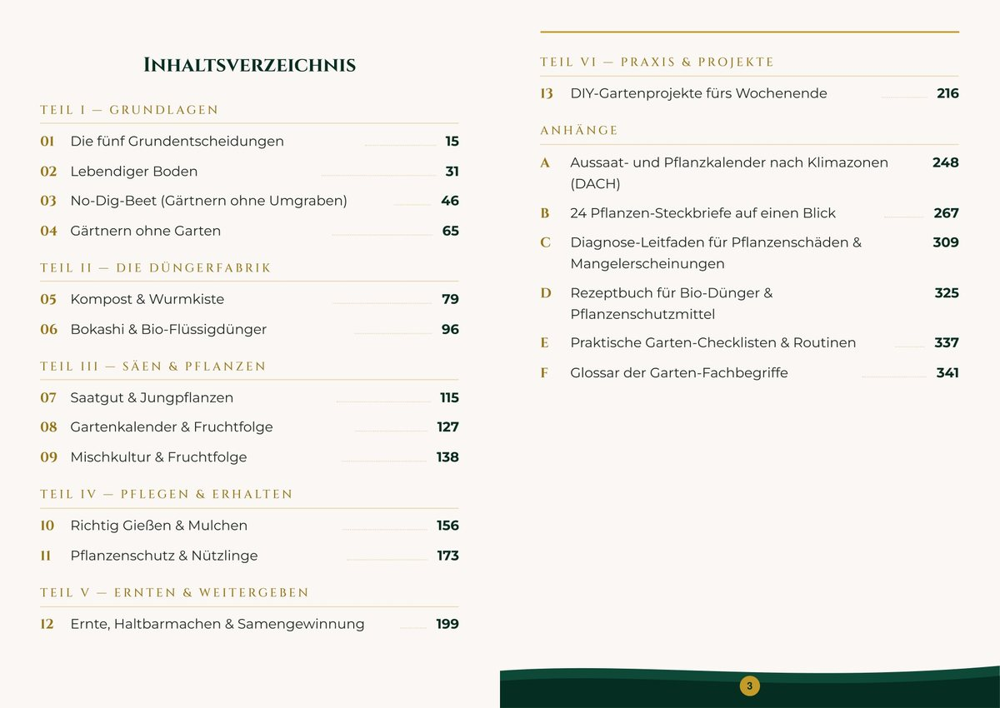
Das Buch ist wie ein Werkzeugkasten aufgebaut. Über das übersichtliche Inhaltsverzeichnis mit allen 13 Modulen und 6 Praxis-Anhängen findest du in Sekunden genau die Antwort, die du gerade am Beet brauchst.
Bei jedem Projekt siehst du alle Schichten, Maße und Materialien klar gezeichnet, nummerierte Schritte und auffällige Praxis- & Warnboxen, die dir den häufigsten Anfängerfehler zeigen, bevor er dir passiert.
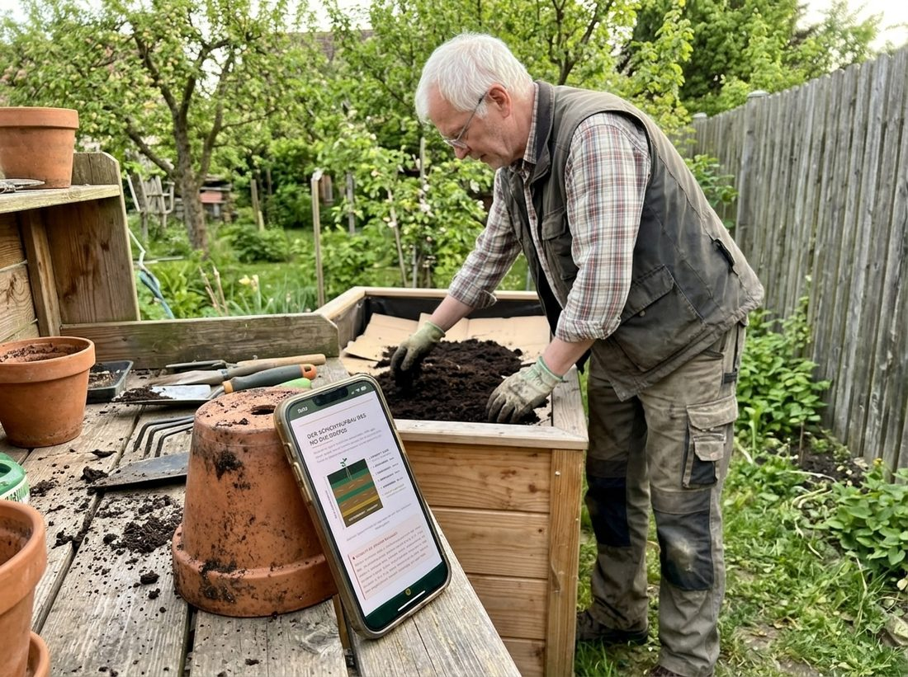
Nimm die Anleitung auf dem Smartphone direkt mit ans Beet. Stelle dein Handy ans Hochbeet oder auf den Pflanztisch und arbeite mit beiden Händen frei – alle Grafiken und Tabellen sind groß und kontrastreich lesbar.
Da es eine digitale Ausgabe (PDF) ist, kannst du in 2 Minuten loslegen. Lies bequem auf deinem Tablet, E-Reader, Smartphone oder PC – und drucke dir genau die Steckbriefe, Rezepte und Kalenderseiten aus, die du im Gartenhaus griffbereit haben möchtest.
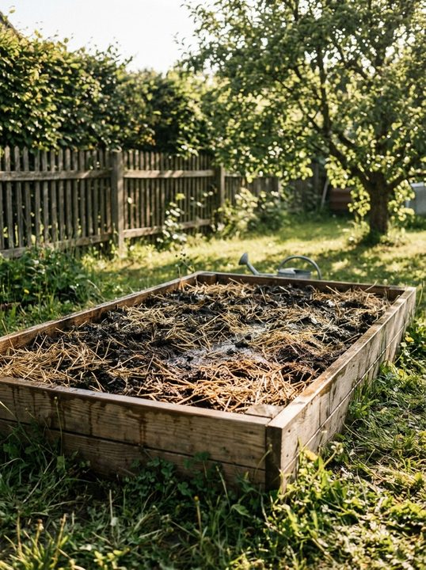
Warum das Umgraben mit dem Spaten Millionen Regenwürmer und Pilzgeflechte zerstört – und wie du mit unbedruckter Wellpappe, Grünschnitt, Laub und Kompost direkt auf dem Rasen ein hochproduktives Gemüsebeet aufbaust.
Praxis-Methode Nr. 1 • Modul 03 · Seite 46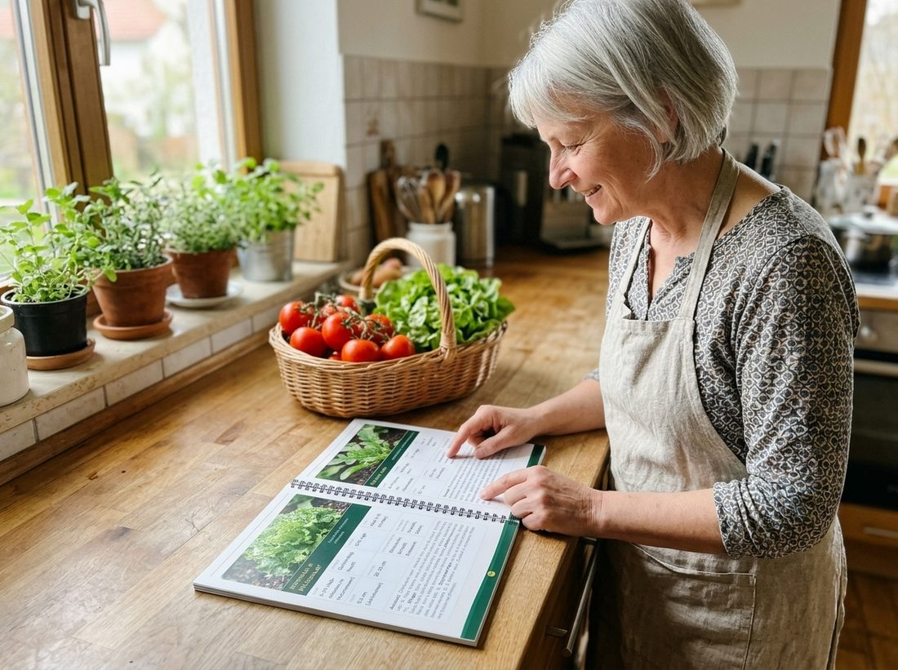
Schluss mit teuren Spezialdüngern aus dem Gartencenter! Hier lernst du Schritt für Schritt, wie du aus Wildkräutern und Küchenvorräten kraftvolle Flüssigdünger und schonende Pflanzenstärkungsmittel mit exakter Dosierung und Wartezeit herstellst.
Praxis-Methode Nr. 2 • Anhang D · Seite 325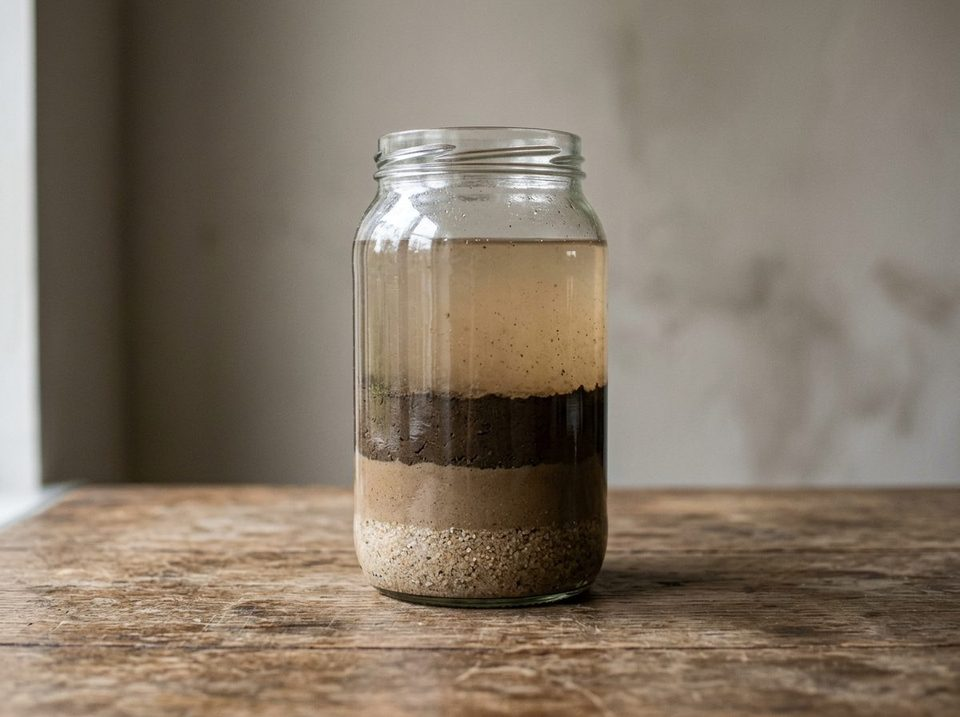
Ein altes Marmeladenglas, etwas Gartenboden und Leitungswasser verraten dir nach dem Absetzen millimetergenau den Anteil von Sand, Schluff und Ton in deiner Erde – und wie viele Liter Kompost du pro Quadratmeter wirklich brauchst.
Praxis-Methode Nr. 3 • Modul 02 · Seite 34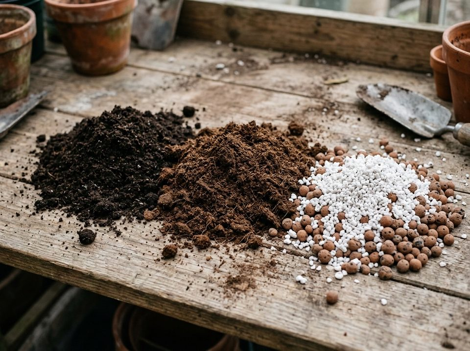
Gekaufte Pflanzerde aus dem Baumarkt sackt im Topf oft schon nach dem dritten Gießen zusammen und wird hart wie ein Ziegelstein. Mit der 3-2-1-Mischung bleibt das Substrat über Monate locker, luftig und speichert Wasser wie ein Schwamm.
Praxis-Methode Nr. 4 • Modul 04 · Seite 68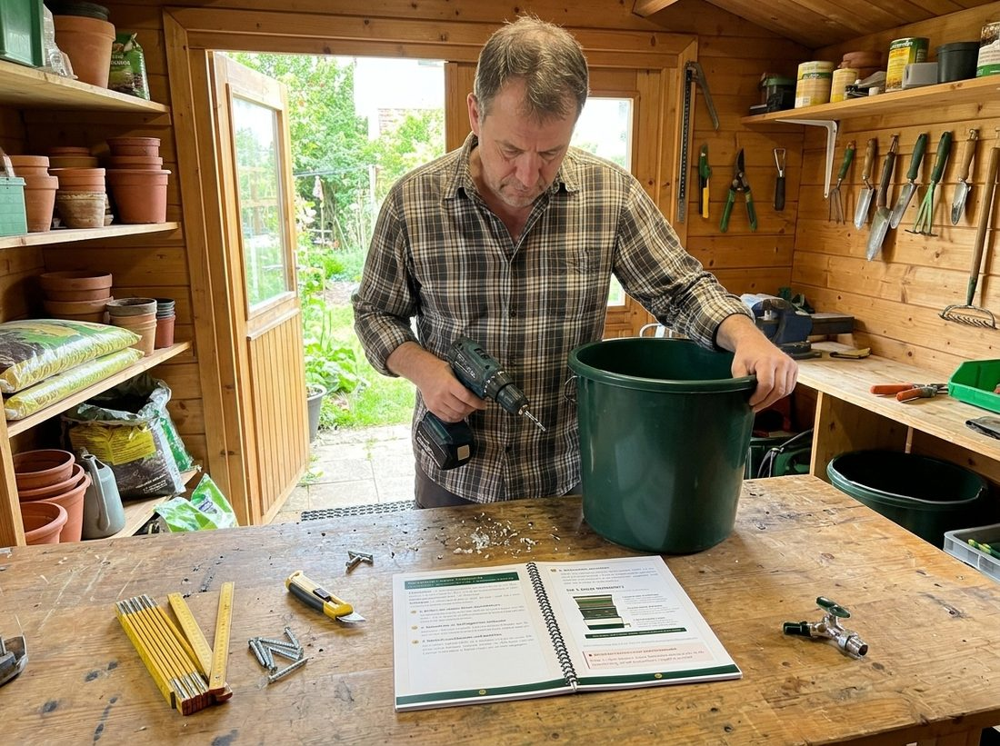
Auf nur 30 × 30 cm Standfläche verwandeln Kompostwürmer deine täglichen Gemüsereste und Kaffeesatz in schwarzes Gold (Wurmhumus) und flüssigen Wurmtee – komplett geruchlos und in einer Stunde für unter 15 Euro selbst gebaut.
Praxis-Methode Nr. 5 • Modul 13 · Seite 218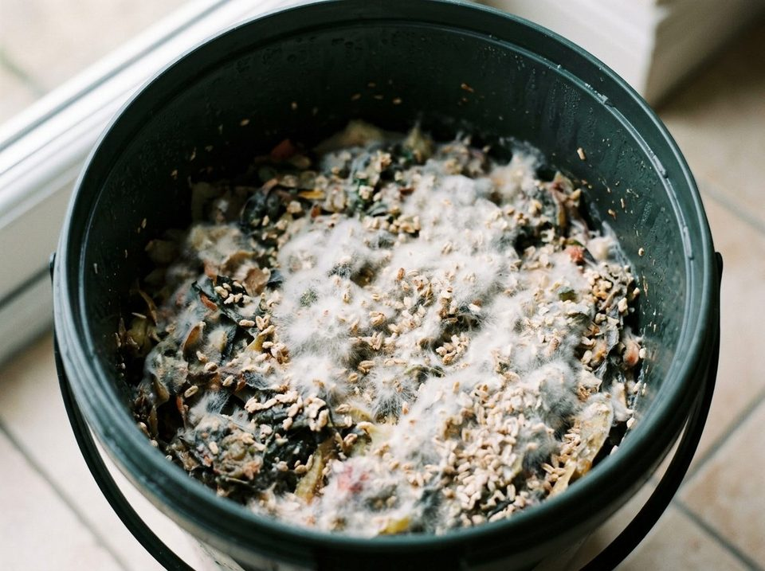
Durch Milchsäure-Fermentation im luftdichten Eimer verarbeitest du Küchenabfälle ohne Fäulnisgeruch und ohne Fruchtfliegen. Nach zwei Wochen erntest du hochkonzentrierten Bokashi-Sickersaft (1:100 verdünnt) als Turbo-Dünger.
Praxis-Methode Nr. 6 • Modul 06 · Seite 96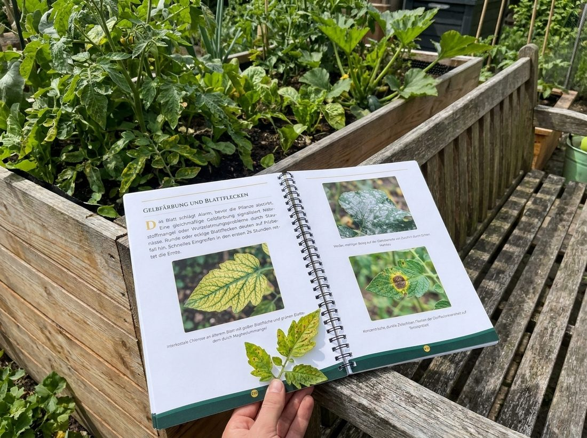
Gelbe Blätter an den unteren Trieben? Dunkle Zielscheiben-Ringe auf der Tomate oder weißer Belag auf der Zucchini? Vergleiche das Blatt direkt am Beet mit den Farbfotos im Buch und greife sofort zur richtigen biologischen Maßnahme.
Praxis-Methode Nr. 7 • Anhang C · Seite 309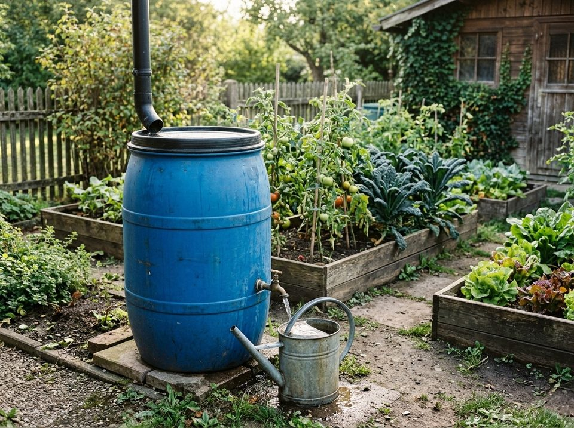
Ein Beet, das breiter als 1,20 Meter ist, zwingt dich beim Jäten und Ernten zum Drauftreten – und verdichtet die Erde sofort wieder. Fünf einfache Messungen zu Sonnenstunden, Wind, Wasserweg und Beetbreite ersparen dir 90 % aller Anfängerfehler.
Praxis-Methode Nr. 8 • Modul 01 · Seite 15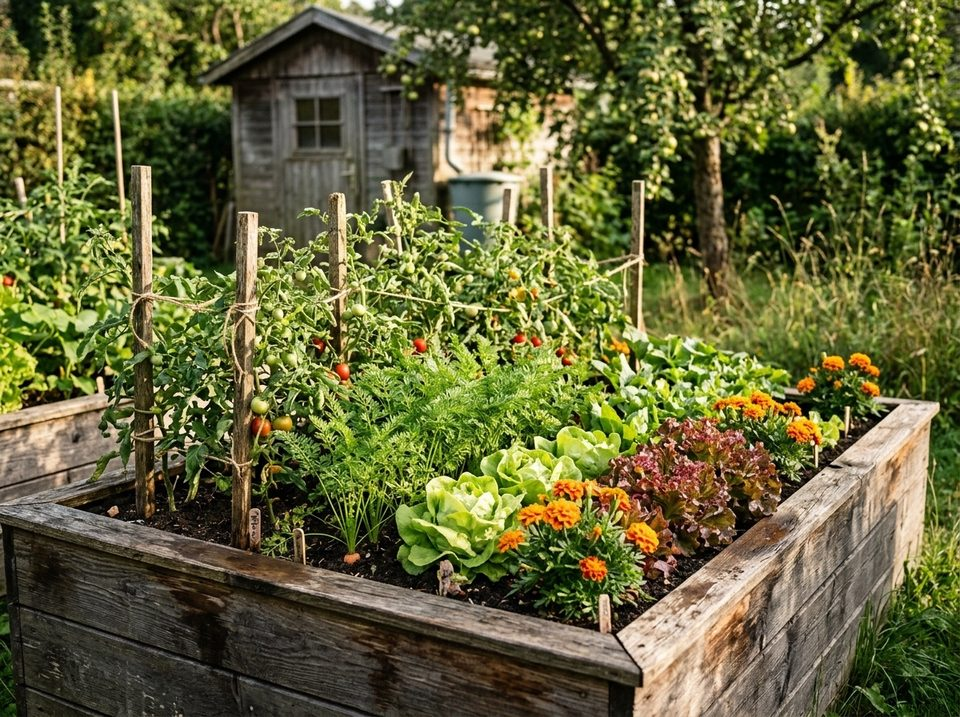
Warum Möhren und Zwiebeln sich gegenseitig die Schädlinge vom Leib halten, während Tomaten und Erbsen nebeneinander kümmern. Mit klaren Pflanzplänen nutzt du Tief-, Mittel- und Flachwurzler im selben Beet ohne Platzverlust.
Praxis-Methode Nr. 9 • Modul 09 · Seite 138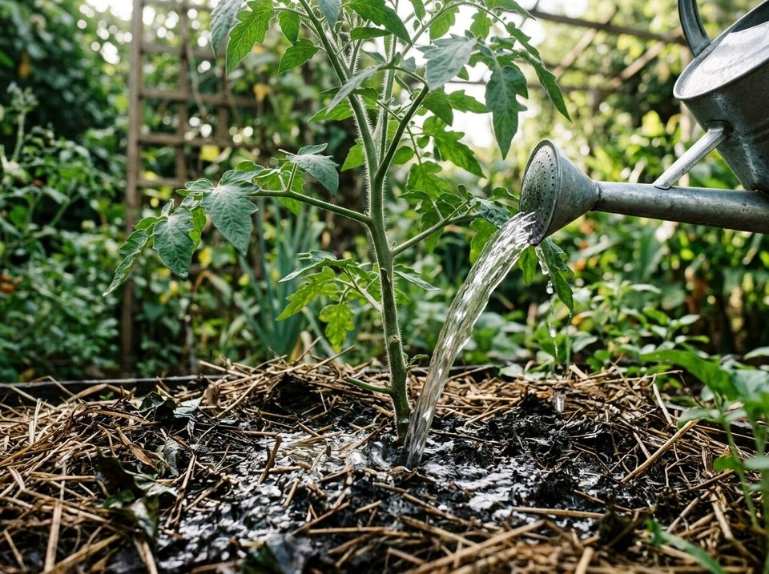
Wer jeden Abend nur die obersten zwei Zentimeter Erde benetzt, erzieht flache, durstige Wurzeln und lädt Kraut- und Braunfäule ein. Lerne den Finger-Test und wie eine 5 cm dicke Mulchschicht bis zu 60 % Gießwasser spart.
Praxis-Methode Nr. 10 • Modul 10 · Seite 156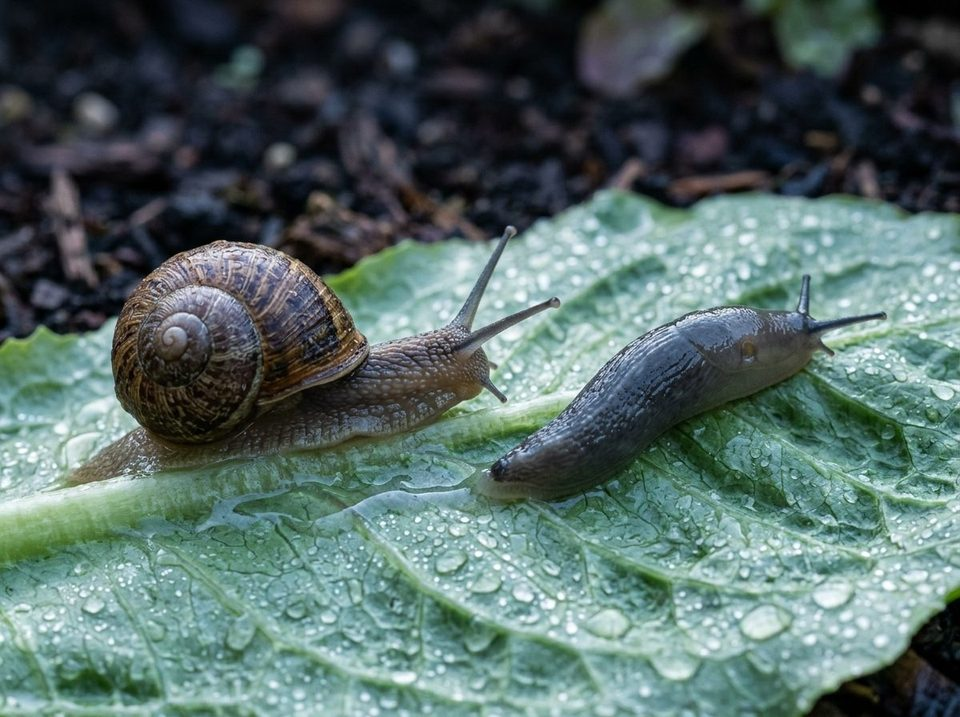
Von der korrekten Montage eines Schneckenzauns über das gezielte Anlocken von Marienkäfern und Florfliegen bis zur raschen Notfall-Behandlung bei akutem Befall – zu 100 % ohne synthetische Gifte im Hausgarten.
Praxis-Methode Nr. 11 • Modul 11 · Seite 173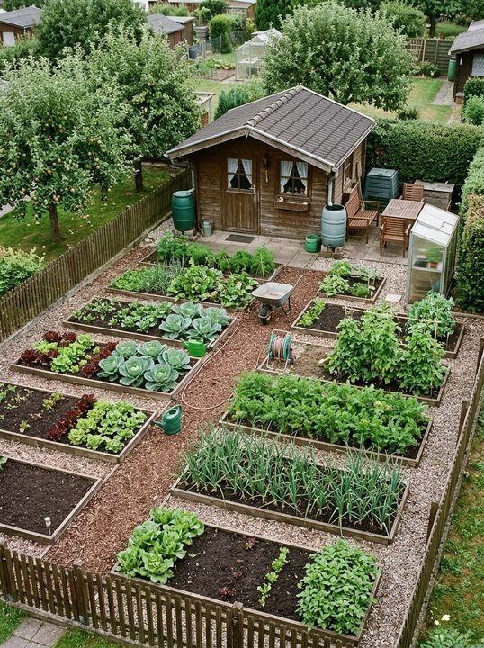
Wer Tomaten und Gurken zwei Wochen zu früh ins Freiland setzt, verliert oft in einer einzigen Mai-Nacht die gesamte Arbeit. Der Jahresplan zeigt dir für alle 5 DACH-Klimazonen exakt, wann Vorkultur, Auspflanzen und Winterernte anstehen.
Praxis-Methode Nr. 12 • Modul 08 · Seite 127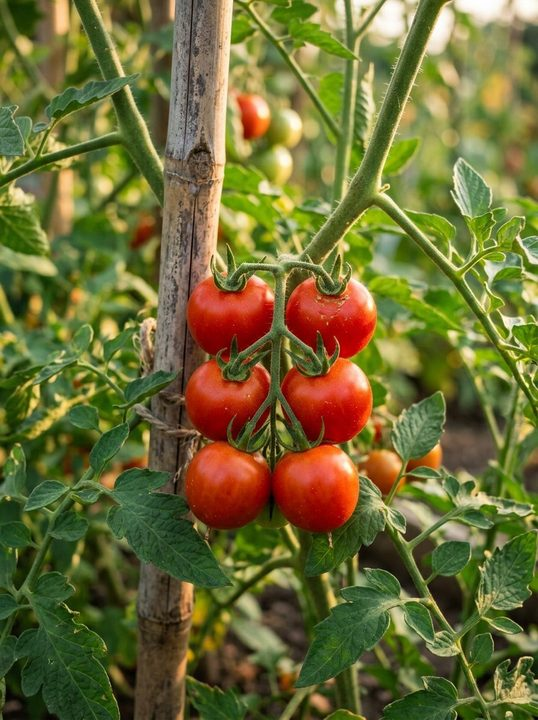
Wie viele Stunden direkte Sonne eine Tomate für süße Früchte braucht, welche Kübelgröße (mindestens 20 bis 30 Liter) auf dem Balkon Pflicht ist und wie du Blütenendfäule von Anfang an verhinderst.
Praxis-Methode Nr. 13 • Anhang B · Seite 281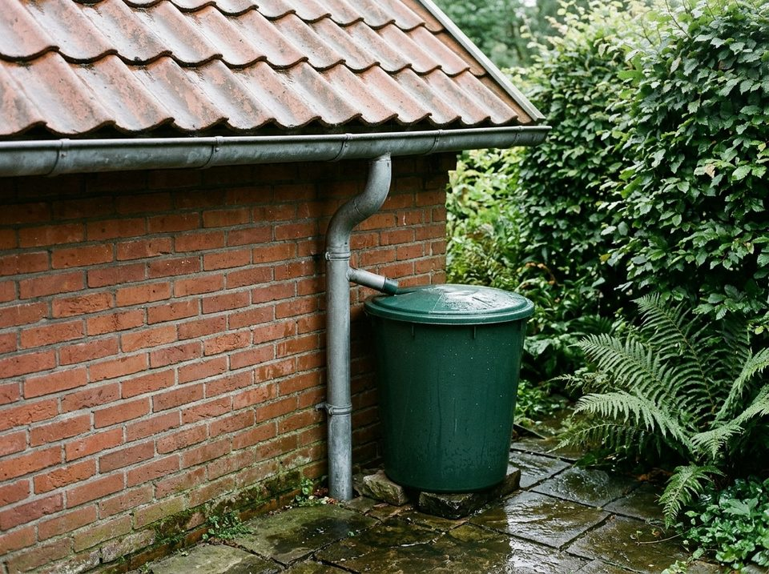
Leitungswasser ist oft kalt und kalkhaltig – temperiertes Regenwasser ist das beste Elixier für empfindliche Jungpflanzen. So schließt du deine Regentonne sauber und kindersicher direkt neben dem Beet an.
Praxis-Methode Nr. 14 • Modul 10 · Seite 168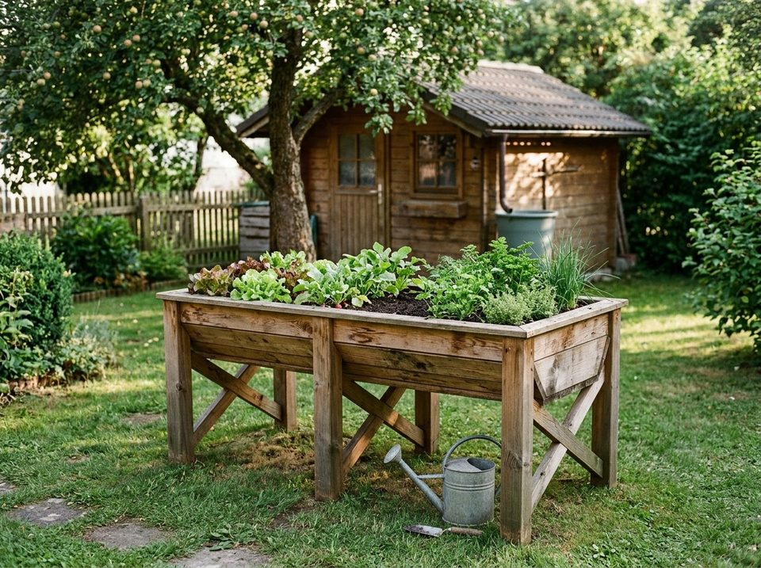
Kompletter Wochenend-Bauplan mit exakter Zuschnittliste, Schraubenmaßen, Nagerschutzgitter gegen Wühlmäuse und Teichfolie – ideal für Terrasse, Hof und jeden, der sich beim Gärtnern nicht mehr tief bücken möchte.
Praxis-Methode Nr. 15 • Modul 13 · Seite 236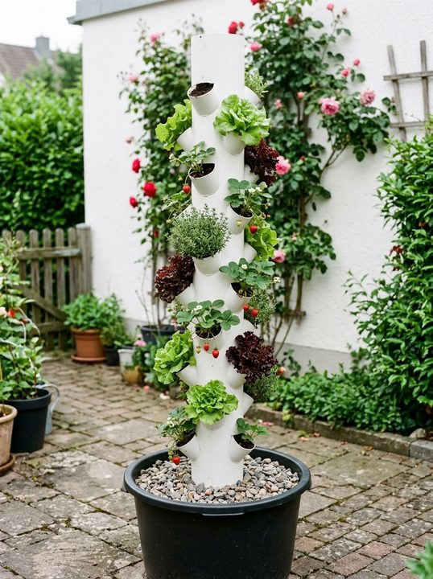
Ein senkrechtes Pflanzrohr mit zentralem Bewässerungskern verwandelt jede sonnige Balkonecke oder Hauswand in eine vertikale Erntewand mit bis zu 24 Pflanzstellen auf kleinstem Raum.
Praxis-Methode Nr. 16 • Modul 13 · Seite 226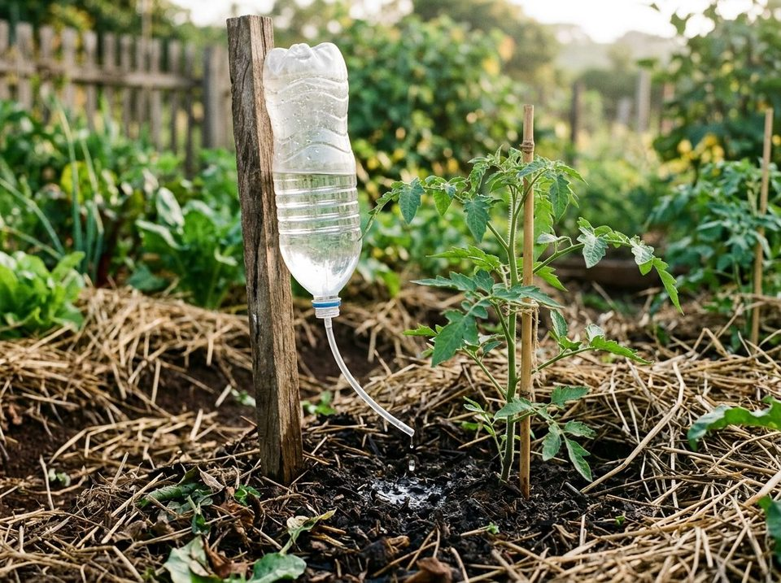
Du fährst im Sommer für ein verlängertes Wochenende weg? Mit diesem simplen Tropfsystem versorgst du Tomaten, Paprika und Balkonkästen tagelang gleichmäßig direkt an der Wurzel.
Praxis-Methode Nr. 17 • Modul 13 · Seite 233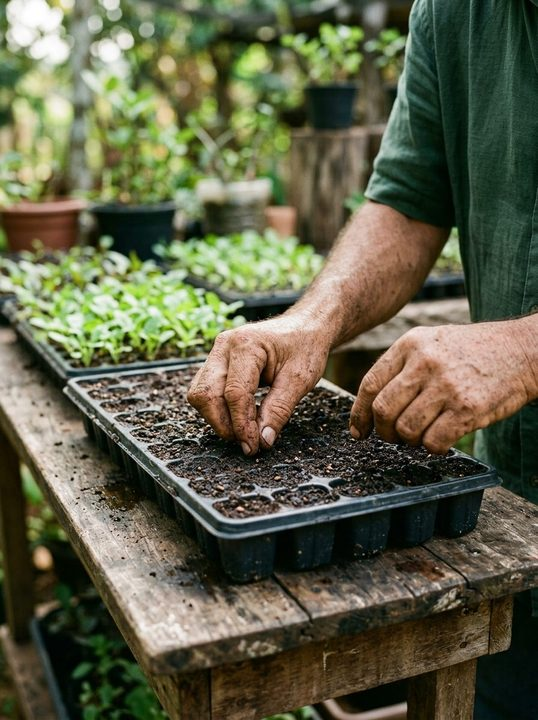
Das Zusammenspiel aus Raumtemperatur und Licht entscheidet in den ersten 10 Tagen über kräftige, gedrungene Jungpflanzen. Inklusive Schritt-für-Schritt-Anleitung zum Pikieren und 7-Tage-Abhärten vor dem Auspflanzen.
Praxis-Methode Nr. 18 • Modul 07 · Seite 115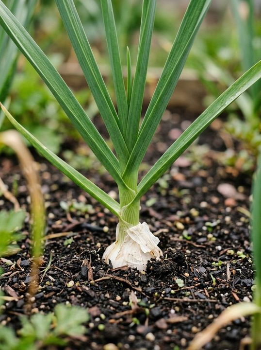
Der richtige Stecktermin im Oktober, der exakte Reihenabstand von 15 × 25 cm und das sichere Erkennungszeichen am Laub, wann Knoblauch und Speisezwiebeln geerntet und zum Trocknen geflochten werden.
Praxis-Methode Nr. 19 • Anhang B · Seite 307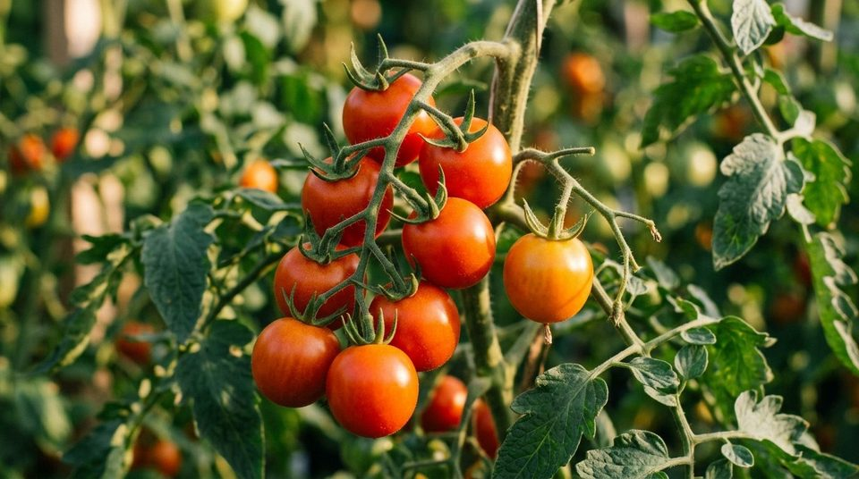
So erkennst du den Unterschied zwischen F1-Hybriden und samenfesten Sorten, fermentierst Tomatensamen im Wasserglas und lagerst dein eigenes Saatgut dunkel, kühl und trocken für maximale Keimkraft über Jahre.
Praxis-Methode Nr. 20 • Modul 12 · Seite 199…und viele weitere Praxisanleitungen auf 347 Seiten in 13 Modulen: Standort- & Bodenanalyse, No-Dig-Beete, Topf- & Balkongarten, Kompost & Wurmkiste, Bokashi & Flüssigdünger, Aussaat, Mischkultur, Bewässerung, biologischer Pflanzenschutz, Samengewinnung und 8 Wochenend-Bauprojekte.
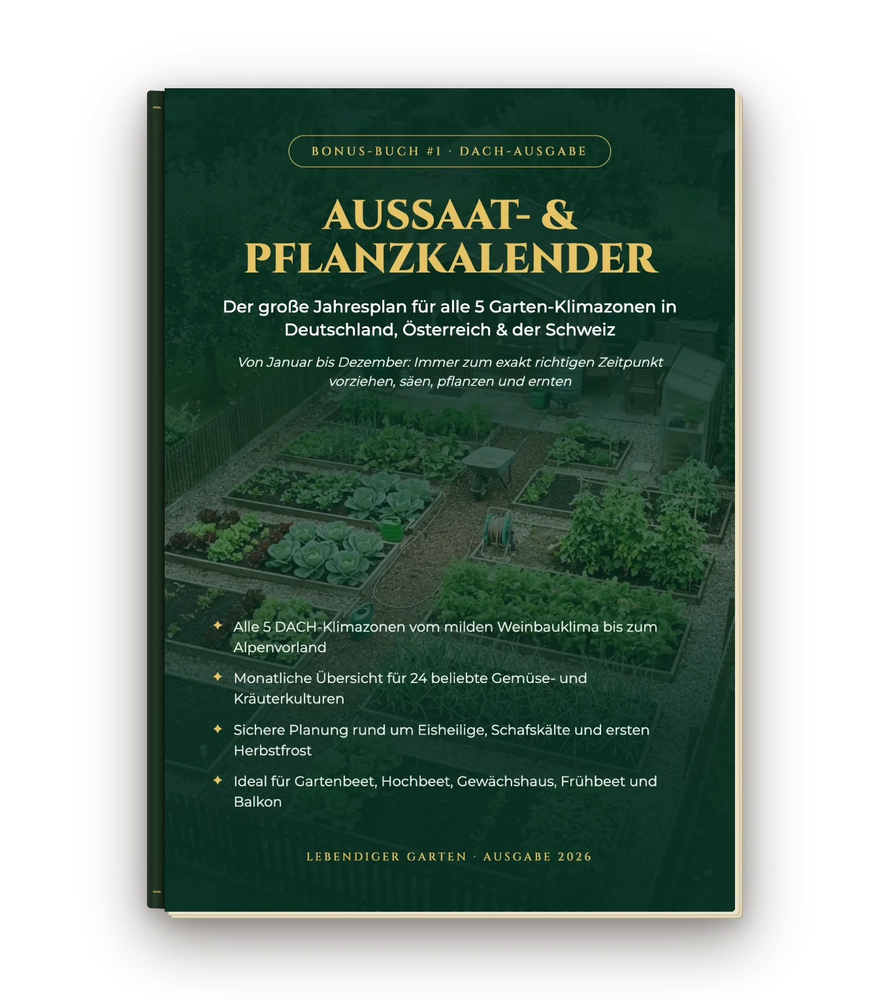
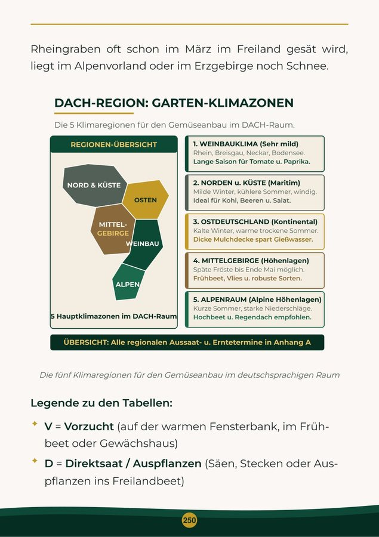
Nie wieder zu früh oder zu spät säen! Dieser übersichtliche Jahreskalender zeigt dir für alle 5 Garten-Klimazonen in Deutschland, Österreich und der Schweiz genau, wann deine 24 wichtigsten Gemüsekulturen vorgezogen, ins Freiland gepflanzt und geerntet werden.
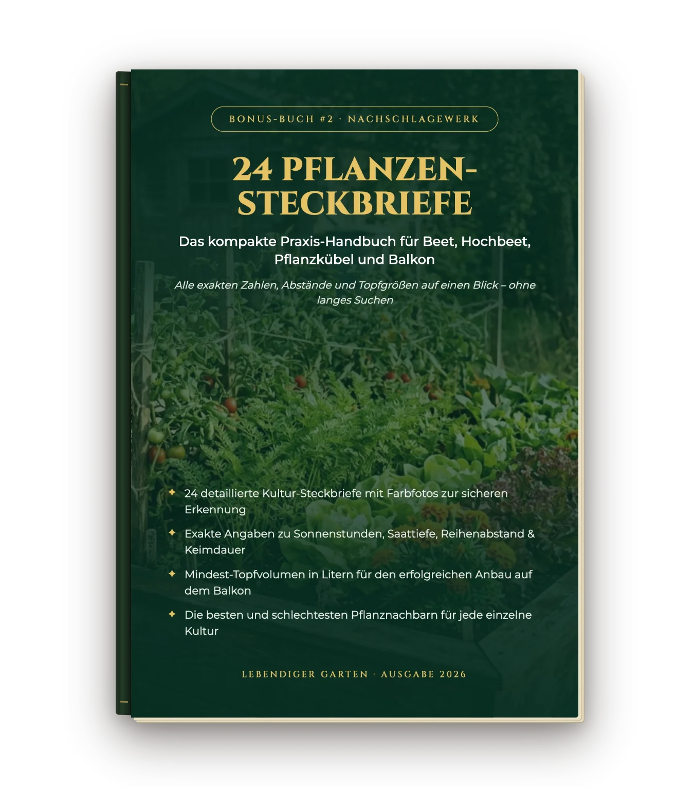
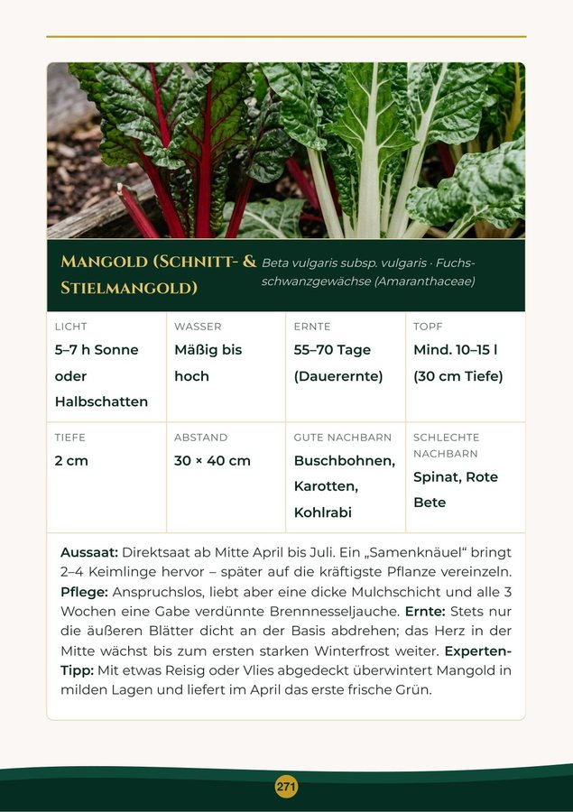
Das kompakte Schnellnachschlagewerk für Beet, Hochbeet, Pflanzkübel und Balkon. Jede der 24 beliebtesten Gemüse- und Kräuterarten auf einer eigenen, reich bebilderten Übersichtsseite mit allen Maßen, die sonst in keinem Samenpäckchen stehen.
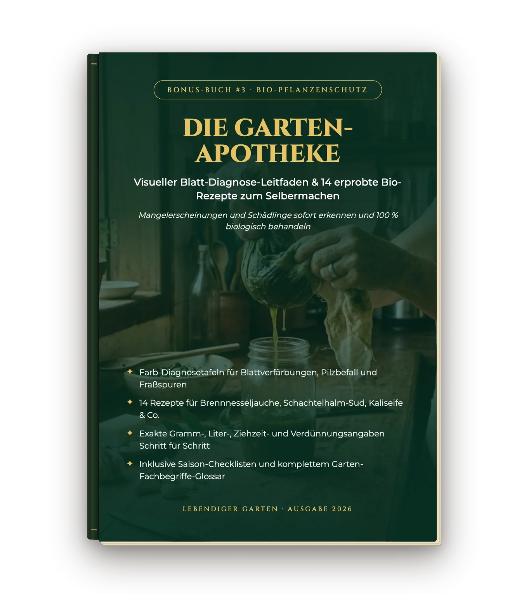
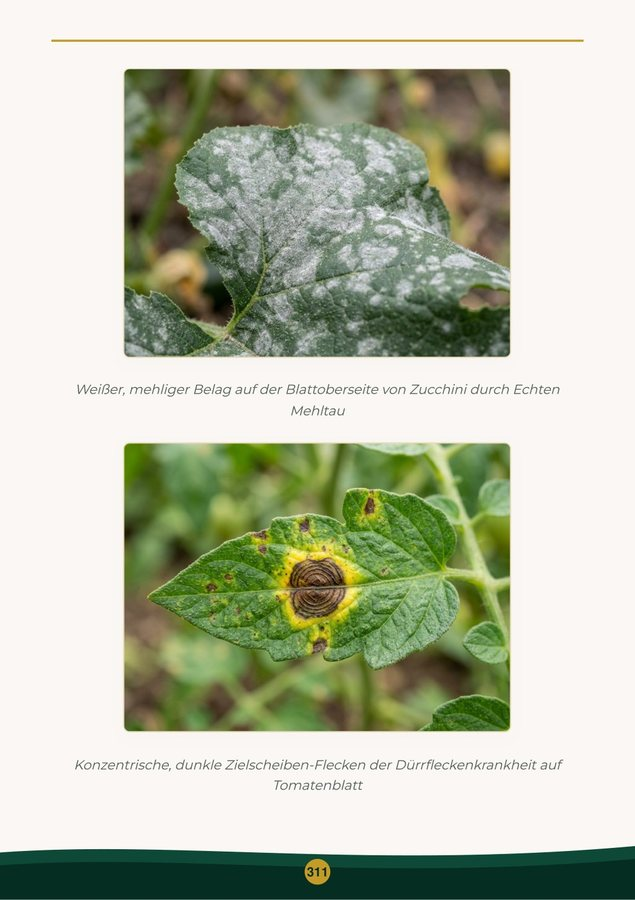
Wenn Blätter sich verfärben oder Schädlinge auftauchen, zählt schnelles, richtiges Handeln. Mit dem visuellen Blatt-Diagnose-Schlüssel erkennst du die Ursache sofort – und stellst dir aus 14 erprobten Bio-Rezepten die passende Hilfe selbst her.
| Lebendiger Garten — Das Praxishandbuch (347 Seiten, 13 Module, 40 Baupläne) | $39 |
| Bonus #1: Der große DACH-Aussaat- & Pflanzkalender (für alle 5 Klimazonen) | $19 |
| Bonus #2: 24 Pflanzen-Steckbriefe auf einen Blick (Beet, Hochbeet & Balkon) | $17 |
| Bonus #3: Die Garten-Apotheke, Blatt-Diagnose & 14 erprobte Bio-Rezepte | $14 |
| Gesamtwert des Pakets | $89 |
Einmalige Zahlung • Sofortiger PDF-Download + Mitgliederbereich • Kein Abo
Lade dir das Praxishandbuch „Lebendiger Garten“ und die drei Bonus-Bücher noch heute herunter. Probiere den Schraubglas-Bodentest aus, mische dein erstes Substrat nach der 3-2-1-Formel oder plane dein Hochbeet. Wenn du nicht zu 100 % begeistert bist, antworte einfach innerhalb von 7 Tagen auf deine Kaufbestätigungs-E-Mail und du bekommst dein gesamtes Geld zurück – und darfst die Bücher trotzdem behalten. Ohne Wenn und Aber.
Du weißt zu 100 %, was in deiner Erde steckt und dass kein Tropfen synthetisches Gift auf deinen Tomaten, deinem Salat oder deinen Kräutern gelandet ist. Frischer und aromatischer als aus dem eigenen Beet geht es nicht.
Wer einmal lernt, aus Laub, Rasenschnitt und Küchenabfällen erstklassigen Kompost, Wurmhumus und Flüssigdünger selbst herzustellen und eigenes Saatgut zu gewinnen, macht seinen Garten dauerhaft unabhängig von teuren Baumarkt-Produkten.
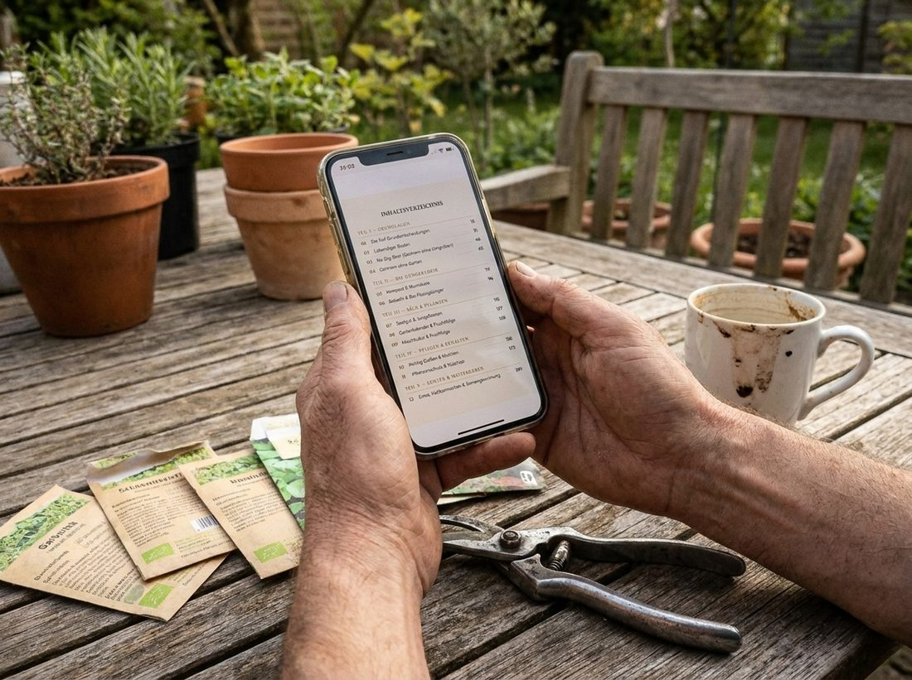
Gedruckte Tabellen und gespeicherte PDFs brauchen keinen Empfang und kein langes Suchen in widersprüchlichen Internetforen. Ein Blick auf den Steckbrief oder den Diagnose-Schlüssel genügt.
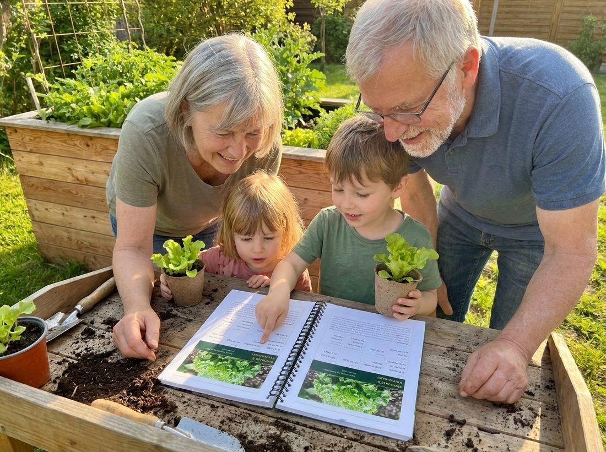
Gemeinsam Radieschen säen, die erste eigene Erdbeere pflücken und beobachten, wie aus einem Samenkorn eine kräftige Pflanze heranwächst – das sind Erlebnisse im Garten, an die sich Kinder ein Leben lang erinnern.
Es handelt sich um ein umfassendes digitales Buch (PDF-Format) in voller Farbe. Direkt nach der Bestellung erhältst du sofortigen Zugang zum kompletten 347-seitigen Praxishandbuch, allen 13 einzeln sortierten Modulen im Mitgliederbereich sowie den 3 kostenlosen Bonus-Büchern. Es wird kein physisches Paket per Post verschickt.
Ja, ausdrücklich! Du erhältst neben der schnellen Mobil-Edition eine hochauflösende Druck-Edition (DIN A4). Viele Leserinnen und Leser lassen sich das Buch (oder ihre Lieblingsmodule und die 3 Bonus-Bücher) im Copyshop mit einer praktischen Spiralbindung binden, damit es auf dem Pflanztisch komplett flach offen liegen bleibt.
Ja. Das PDF-Format lässt sich auf jedem Smartphone, Tablet, Laptop, PC und PDF-fähigen E-Reader öffnen. Zusätzlich hast du Zugang zu unserem übersichtlichen Online-Mitgliederbereich, in dem das gesamte Buch bereits komfortabel in die einzelnen Module aufgeteilt ist.
Absolut! Ein eigenes Kapitel (Modul 04: Gärtnern ohne Garten) sowie alle 24 Pflanzen-Steckbriefe zeigen dir die exakten Topfgrößen in Litern, die 3-2-1-Substratmischung für Kübel und vertikale Bauprojekte, mit denen du selbst auf 2 Quadratmetern Balkon erstaunliche Mengen erntest.
Ja, zu 100 %. Alle Aussaat-, Vorkultur- und Pflanztermine berücksichtigen die mitteleuropäischen Jahreszeiten, die Eisheiligen im Mai, die Schafskälte im Juni sowie die 5 verschiedenen Garten-Klimazonen vom milden Weinbauklima bis zu den kühleren Mittelgebirgs- und Alpenlagen.
Du bist durch unsere 7-Tage-Geld-zurück-Garantie vollständig abgesichert. Wenn du das Buch herunterlädst und merkst, dass es doch nichts für dich ist, genügt eine kurze Antwort auf deine Kaufbestätigungs-E-Mail innerhalb von 7 Tagen und du erhältst den vollen Kaufpreis erstattet – ohne Wenn und Aber.